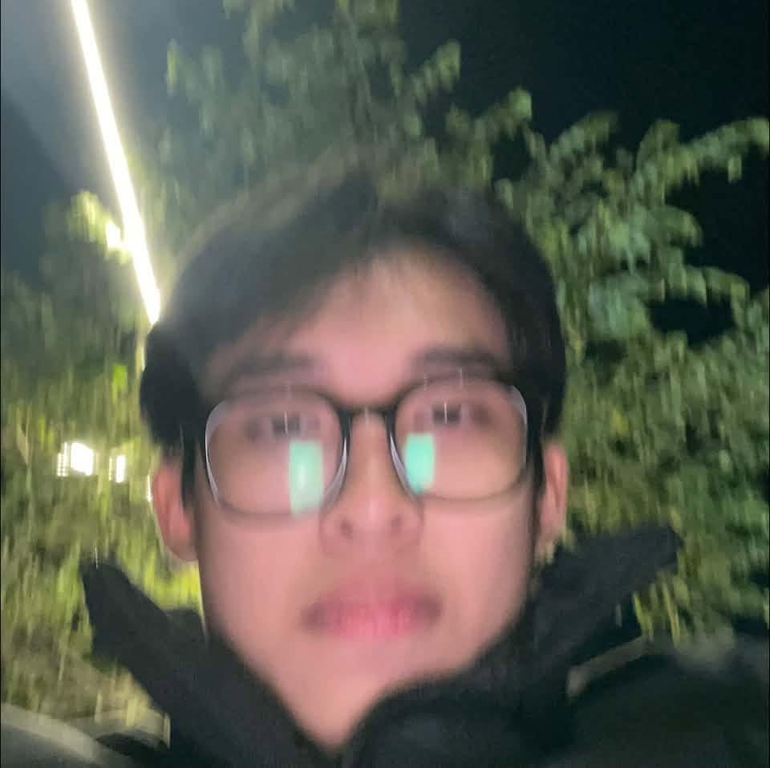

setup.notes
PC & góc bàn
Decor góc bàn, sắp xếp setup và cài Windows. Thích cảm giác mọi thứ chạy ngon và nhìn cũng đẹp.
// xin chào, mình là
Một chút công nghệ.
Một chút sáng tạo. Rất nhiều tò mò.
Thích máy tính, mê những góc bàn đẹp và hay mày mò vài thứ mới. Đây là góc nhỏ để mình kể một chút về những điều mình thích.

Chưa phải chuyên gia.
Nhưng luôn thích học thêm.
Decor góc bàn, sắp xếp setup và cài Windows. Thích cảm giác mọi thứ chạy ngon và nhìn cũng đẹp.
Biến ý tưởng thành hình ảnh bằng Photoshop và Canva. Thử màu, thử chữ, rồi thử lại đến khi thấy ưng.
Từ một ý tưởng bất chợt đến một thứ có thể dùng được. Dự án nhỏ thôi, nhưng niềm vui thì lớn.
curiosity never ends_Chuyện máy tính, thiết kế,
hay đơn giản là một lời chào.
Một chút yêu thương cho những ý tưởng nhỏ.
Cảm ơn ông vì đã ghé chơi!
 Bấm để xem mã lớn ↗
Bấm để xem mã lớn ↗PHAN NGOC BAO
Không tải được QR. Bạn vẫn có thể sao chép số tài khoản bên dưới.
 Bấm để xem mã lớn ↗
Bấm để xem mã lớn ↗PHAN NGOC BAO
Không tải được QR. Bạn vẫn có thể sao chép số tài khoản bên dưới.
Không cần nhiều đâu, ghé chơi là mình vui rồi ♡